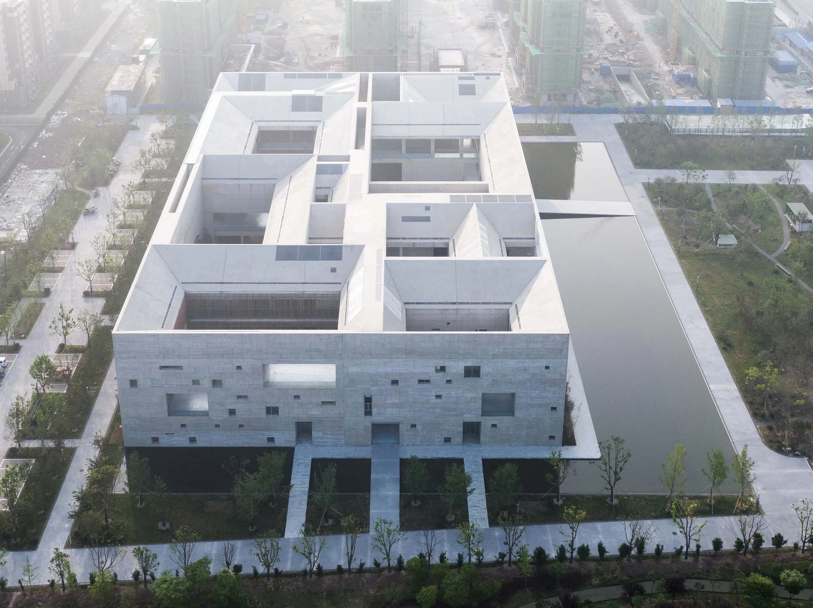
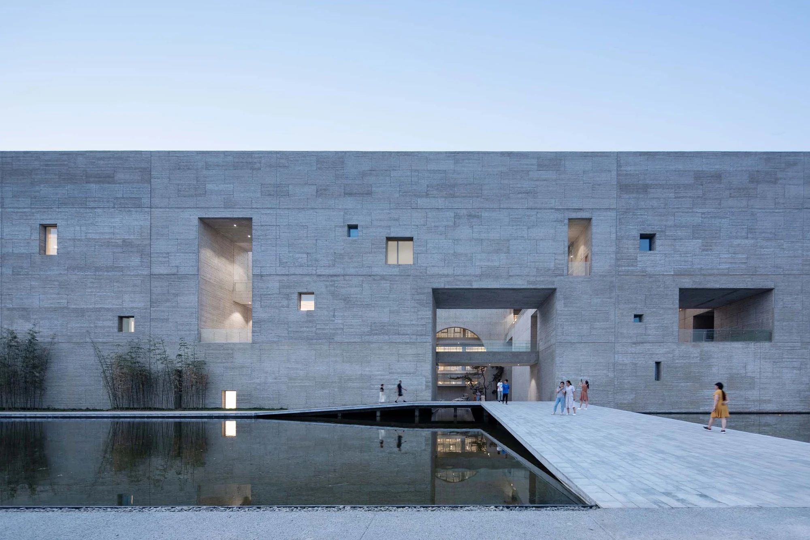
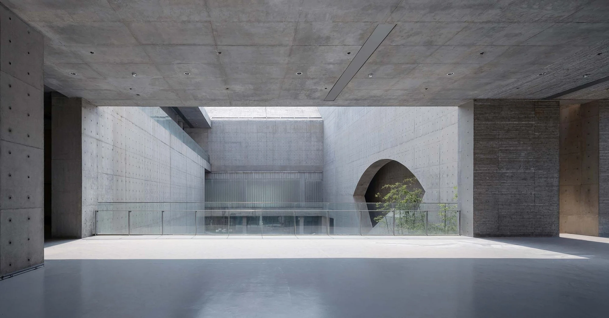
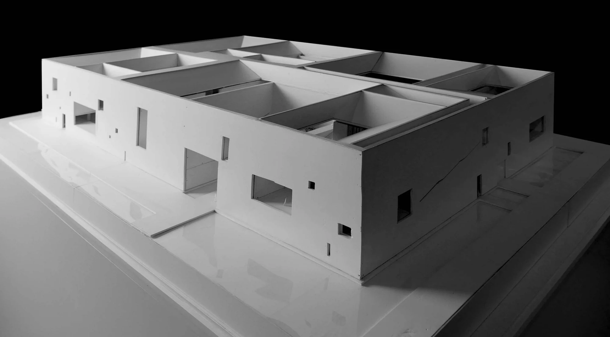
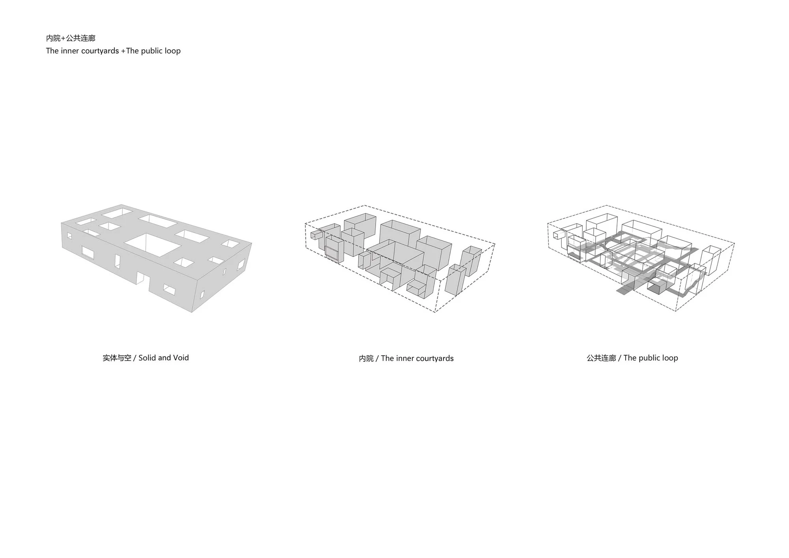
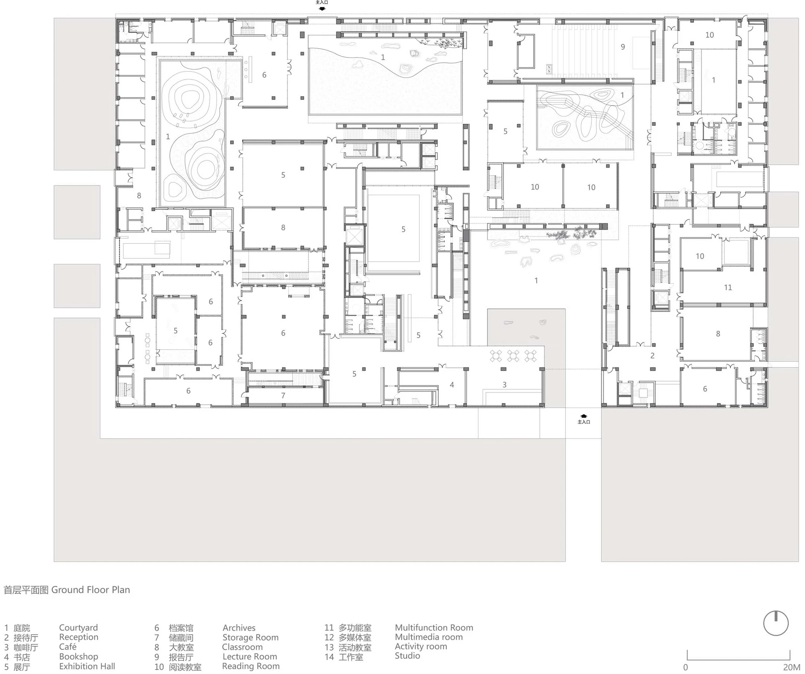
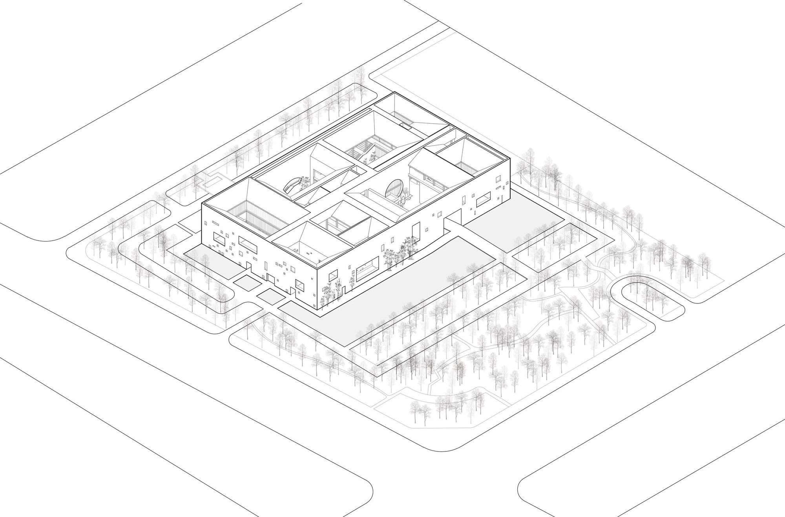
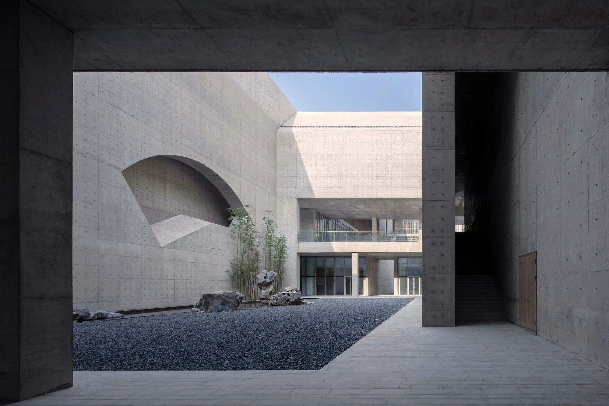
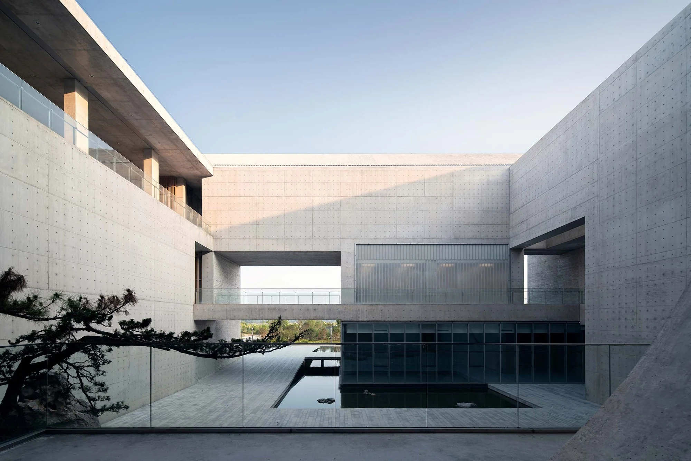

Courtyard and void studies
The concept model and courtyard diagram make the building's solid-and-void logic legible before the visitor enters it.



Shou County Culture and Art Center is organized as a solid outer volume opened by a sequence of inner courts. Instead of treating circulation as a corridor between rooms, the building makes daylight, sky and movement part of the public experience.
This draft reads the project through three linked scales: the courtyard idea, the public loop that connects the programme, and the completed spaces encountered at the entrance and along the covered route.
The contribution below describes the project reading and supplied materials from an architectural internship; authorship remains with the wider studio team.
The concept model and courtyard diagram make the building's solid-and-void logic legible before the visitor enters it.
The plan and axonometric drawing follow how rooms, courtyards and circulation are organized as one continuous sequence.
Completed photographs document the entrance, back courtyard and covered route as the built expression of the study.
The first reading is not a facade, but a sequence of voids cut into a quiet outer mass.
The concept model and courtyard analysis describe how the building is hollowed out from within. Each opening brings a different relation to daylight, landscape and the rooms around it, allowing the cultural programme to remain compact without becoming closed.
A continuous outer volume is made porous by carefully placed courts.
Open-to-sky rooms give the programme smaller moments of pause and orientation.
Movement becomes a spatial sequence that links the building's separate rooms.


The route is the building's organizing device: it connects rooms, courts and changing views without flattening their differences.
The ground-floor plan shows the programme arranged around several open rooms and courtyards. The axonometric drawing makes the vertical and horizontal relationships easier to read, from the entrance threshold to the upper circulation and the spaces that look back into the building.
The main approach leads from the landscape into a defined public threshold.
Covered routes connect exhibitions, reading rooms, classrooms and courtyards.
Open courts interrupt the sequence with daylight, planting and sky.


The completed photographs shift the reading from diagram to atmosphere: stone, water, shade and the changing scale of the route.
The entrance frames the first passage into the building. Further inside, the back courtyard and covered corridors create a slower rhythm, where views are repeatedly opened, compressed and redirected. The architectural idea is therefore experienced as a series of transitions rather than one single room.
Cross from the landscape into the courtyard system.
Move through shaded passages and framed openings.
Return to light, water and the sky at the inner courts.


Architecture: Studio Zhu-Pei. Mo Chen participated as an architectural intern. Drawings and models are studio project materials, not presented as sole-authored work. Photography: Su Shengliang, as credited in the supplied source files.
Back to top ↑